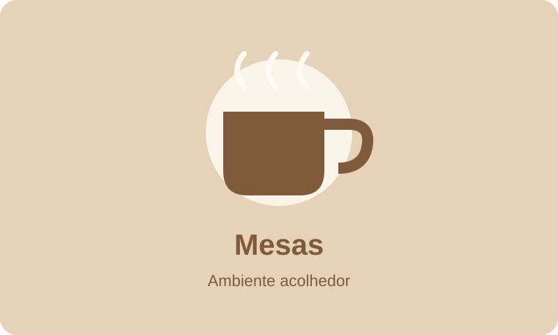
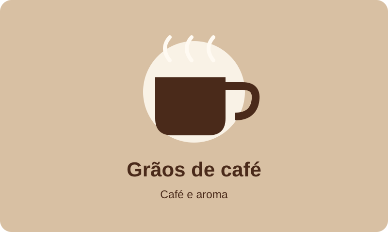

A nossa história
O Café Aroma é uma cafetaria fictícia criada para um projeto académico. A sua ideia é simples: oferecer um espaço confortável onde as pessoas possam conversar, estudar ou fazer uma pausa.
O que nos inspira
Valorizamos a hospitalidade, a qualidade das bebidas e a importância dos pequenos momentos do dia.
- Receber cada pessoa com simpatia.
- Servir bebidas preparadas no momento.
- Criar um ambiente confortável para diferentes ocasiões.
Um ambiente acolhedor


Veja as nossas sugestões na página do menu.